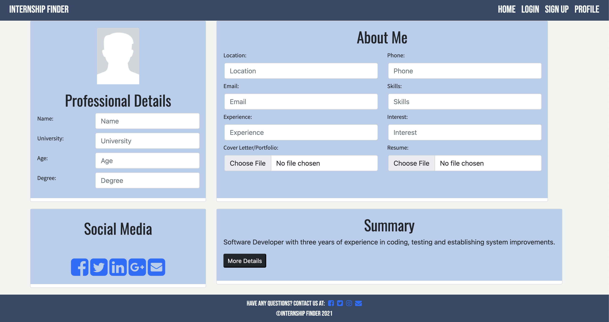
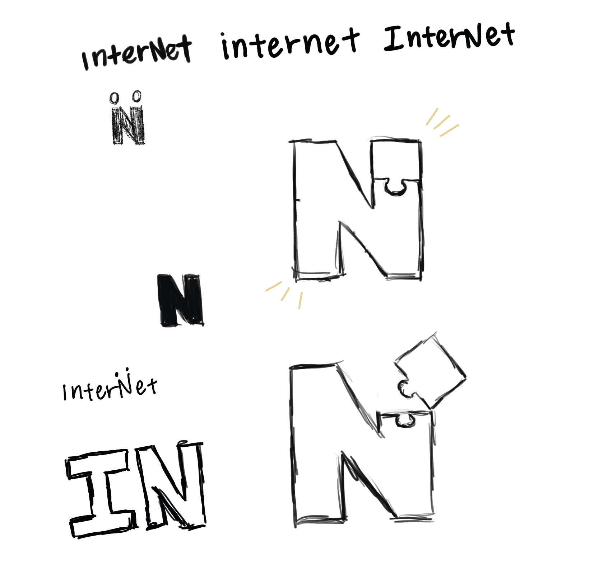

Project Type: Website
Role: Project Manager, UX Designer
Tools: HTML, CSS, JavaScript, React, Firebase, Figma
Concept Overview
interNet is an internship finding website that allows users to easily find tech related internship listings. Like many other job searching sites, users can search and parse through many different listings. However, interNet serves to function more as internship matching application. Based on the user's profile, we will match them up with an internship listing that matches their skills. In this way, users can easily search and apply for internships that fit them.
Problem Space
Finding internships can be hard, especially when you're a college student. While many students are already preoccupied with academics, the thought of finding internships can feel overwhelming and stressful. It can be hard to focus on both school and internship searching. It takes time to search for internships that fit to your liking, which can make the whole process seem tedious or daunting. interNet aims to make that process much easier! By having a matching system, we can cut down the time it takes to look for internships. Our project aims to ease students' stress about finding internships and quickly give them tailored results that fit them.
Wireframe
To make sure that our team is on the same page and that everyone had an idea of what we wanted, we created a low fidelity wireframe that had the basic structure and flow of our vision. We went through lots of discussion about how our pages should look and where we should organize different information. In the end, we decided with this wireframe and to continue building off of it in our future iterations.
First Iteration
In our first iteration, we created a template using HTML and CSS only. We started off with our four main screens: matching page, about page, profile page, and login/sign up page. We wanted our site to be easily accessible, so we added a navbar to allow users to easily navigate between these pages.
Pictured below is an image of our first iteration of the profile page.
Design
We wanted a logo to go with our site, so we went through a brainstorming process to come up with a simple logo that represented our mission of making internship searching easier through matches. In the end, we settled with a logo that represented a piece of a jigsaw puzzle since we are matching users with their perfect pieces (internships).
In addition, after thorough color theory research, we used a blue toned palette to convey a more 'trustworthy' vibe. Our efforts in polishing the designs of our website ultimately led us to a more professional looking website.
Final Product
Through multiple iterations and critiques, we finalized our website and added functionality using JavaScript, React, and Firebase. The website allows users to log in or sign up, make a profile, and get a internship match based on that profile.
We wanted our site to have clear visibility and affordance, so we made the navbar as simple as possible. We only created six pages: explore page, login/sign up, profile, favorites, match, and an about page. By using icons and singular words on the nav bar, we are able to clearly indicate which pages they link to. We got rid of extraneous information that didn't seem the most relavant, such as cleaning up the profile page to make it neater and more straightforward. Overall, we followed the wireframe more and adjusted the hierarchies to make the website have better flow.
Press the button below to visit our website!
visit interNetKey Takeaways
- As a designer, working with developers means to not only hand off designs, but also to take their design directions into account and work with them to create a product that reflects the team's ideas
- Constructive criticism is meant to help you grow, don't take it personally. Take it and use it to help you iterate
- Make multiple iterations of a design and ask others for opinions, this will help with finding THE design that works best